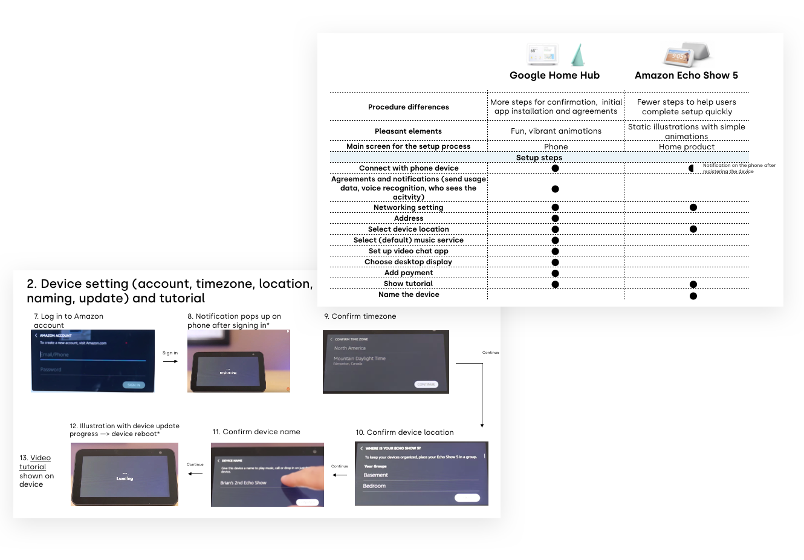

UX research internship at Essential.
In summer 2019, I interned at Essential's UX team as the user researcher for Project GEM - a ground-breaking consumer electronic concept that aims to disrupt the market with a new mobile experience. The experience working at a fast-pace consumer electronics startup and learning from a group of great talents was challenging and rewarding.

Internship duration
11 weeks
June - August 2019
Methodologies
Literature review
Comparative analysis
Workshop
Use cases and scenarios
Usability testing
Main deliverables
A product positioning strategy report
Three usability study reports and presentations
Two comparative analyses
WHAT I DID
Generative and evaluative research
Working as the only UX researcher within a team that developed at full-speed, I was able to research for different stages of the design process.
During the internship, I worked closely with the UX director to position the UX strategy of a brand-new product category. This included identifying potential user groups and usage scenarios for development and future marketing purposes, as well as planning against key competitors to direct product focus.
1. Explore user archetypes and their potential behaviors
Under project constraints, I conducted a generative research project in order to identify the core user groups as well as their behaviors with table research and a workshop.

I synthesized data from a literature review of more than 30 research papers to understand consumer electronics device usage behaviors and find the competitive edge of GEM.

Affinity diagram completed throughout an internal workshop session.
2. Comparative analysis for design insights
In addition, I provided comparative analysis reports to inform the design team of the strategies of similar products. This helped the designers to ideate for a more streamlined experience.
One comparative analysis I have conducted was the onboarding process for home assistants.
3. Usability testings and reporting
I conducted regular usability testings within the company to help evaluate the user experience of GEM's interface design at a very early stage. The designs put into test included but not restricted to the home screen, input methods, social media apps, productivity tools, multimedia apps, and notification center. Due to the special form factor of GEM, my evaluations highly emphasized accessibility, in addition to user flow and visual hierarchy of the design.
By live-streaming the testing sessions via Google Hangout, I was able to involve designers in the testing process in real-time, to enable more effective collaboration with the designers.
In addition to providing preliminary results, user feedback, and design suggestions within the UX team right after the tests, I have also shared key findings at the company's all-hands meeting. By playing back key interaction clips of the users with the product, I was able to demonstrate the importance of certain technologies in front of the engineering team to help enhance the overall experience of the product.
Examples of my usability reports within the design team.
I edited key reactions into close-captioned short clips to communicate usability testing results more effectively at all-hands meetings.
The opportunity to work on both generative and evaluative research projects has allowed me to see the design process holistically, learn to guide product-line decisions, and reflect on my own end-to-end UX projects.
KEY TAKEAWAYS
Be proactive
As the only intern and researcher within the team, I had to conduct my studies independently most of the time. At times, this could be challenging as I wouldn't be able to get the most immediate feedback, or just have someone that I can directly observe and learn side by side.
With the goal to get the most out of this internship, I was inspired by a talk at San Francisco Design Week given by Alison Entsminger, the design lead at IBM "From Self-perception to Self-Awareness: Finding your Data, Feedback and Growth Potential", where she shared about how we should not be afraid of asking for feedback from others for a better version of ourselves.
At work, I proactively asked for feedback and suggestions from my supervisors and teammates. From them, I was able to identify a lot of room for improvement of my research skills that I wasn't aware of before, as well as learning from success stories shared by seasoned designers.
Meanwhile, I also reached out to people from other teams at the company and shared with them about my work. By advocating UX practices with PMs, engineers, and coworkers from the operation team, I was not only able to collect feedback from them, establish great friendships, but I also felt I have help fostered the culture of UX within the company.

Alison from IBM shared an inspiring idea and motivated me to ask for feedback during my internship.
Catch my audeince's attention
As a researcher, I presented my research findings in front of different audience, including the UX director, the UX design team, and the whole company including the CTO and VPs of engineering. In order to deliver messages effectively, I would reach out to my future audeince and ask them what information they would be most interested in.
From there, I learned to develop different strategies for presentation. For instance, during the all-hands meeting, I showed close-captioned video clips of users' reactions to highlight usability issues that I observed during my studies. At presentations within the design team, I synthesized users' ideas on how they would design a feature differently, while referring the designs of similar products.
Over the course of the internship, I noticed that designers and engineers would mention my research findings during their presentations, when they explained their design decisions and the importance of certain technical features. I was motivated by the possible impact of my research.
TESTIMONIAL
What my mentor says
The UX Director rated my overall performance as 'Outstanding'. Below is a short excerpt of her end-of-the-program feedback:
She became a trusted member of the team. She is accountable to her research area, has a sense of pride and personal accountability to end-to-end quality.

Until now, I still feel so incredible to be able to learn from these top-notch designers and managers during my internship time!